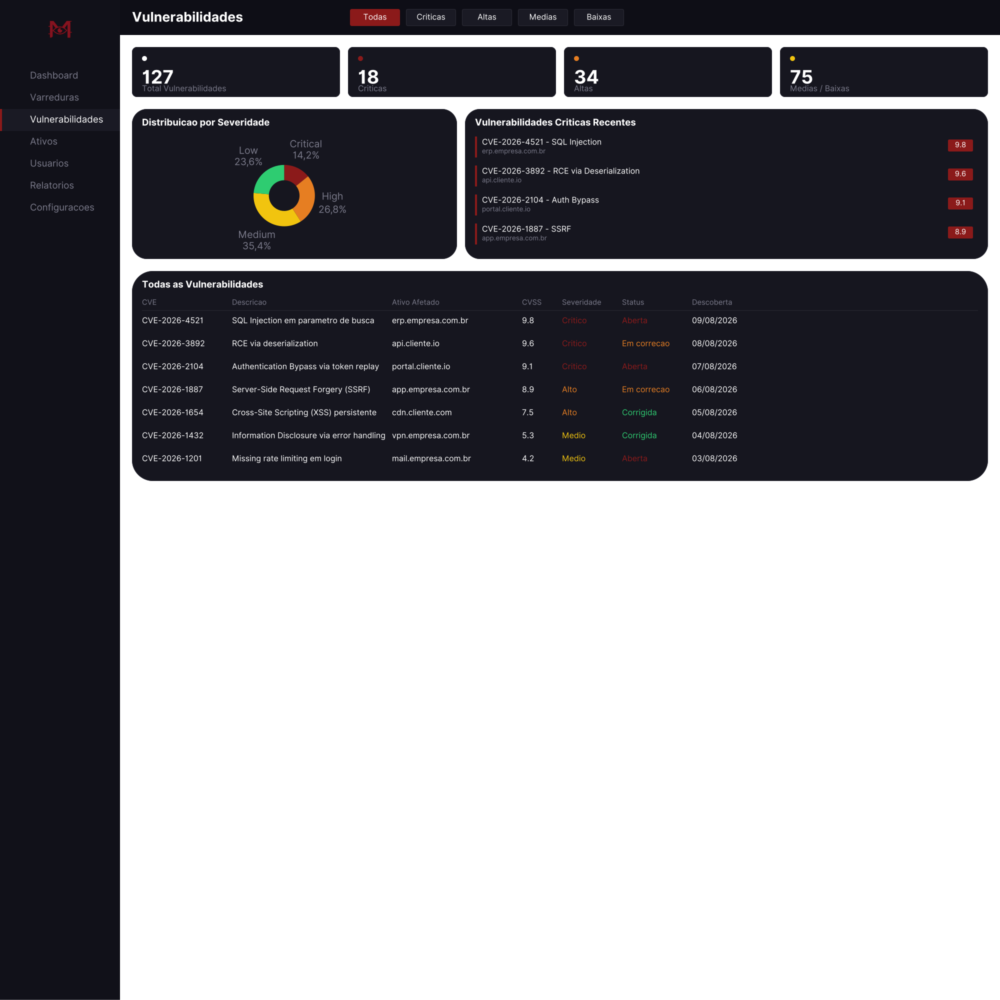
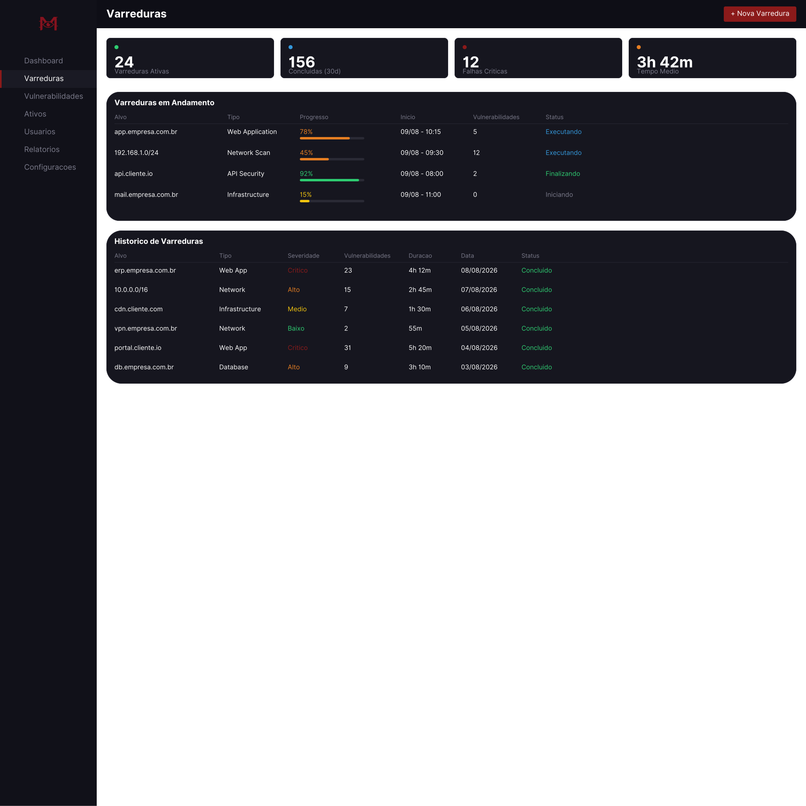
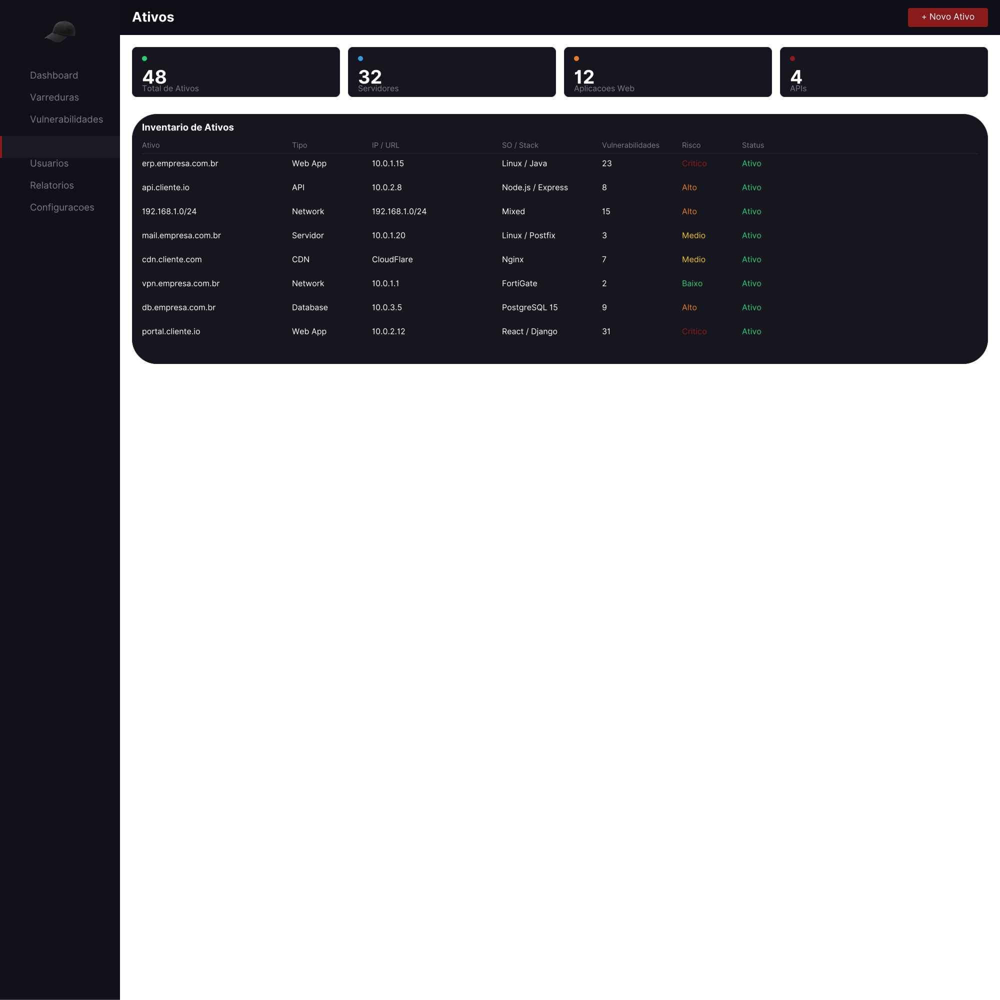
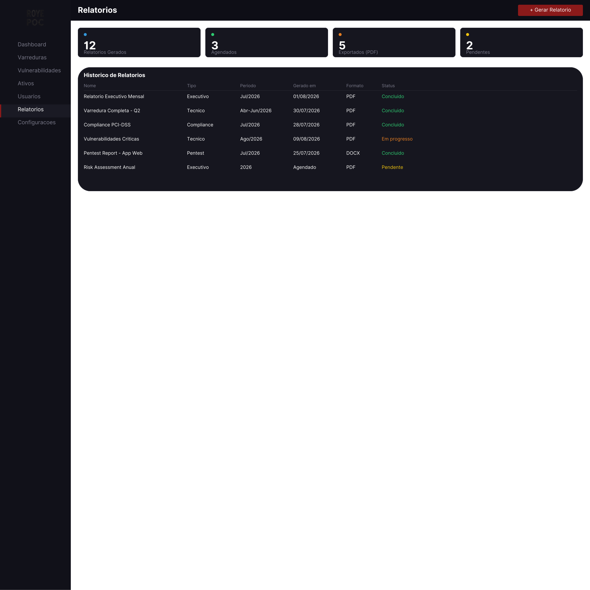
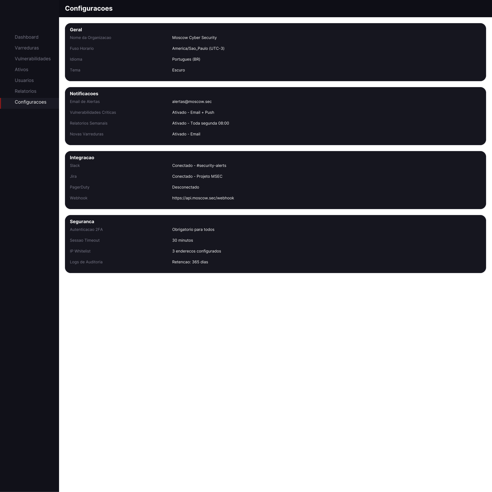

Referencia de design (mockups em SVG, design intacto). Abra cada tela para visualizar em tamanho real. Para reimplementar como codigo funcional, o Claude Code deve ler o CLAUDE.md na raiz.
CLAUDE.md
Tela de acesso: split visual (esfera vermelha) + formulario de login, SSO Google/Microsoft.
Painel principal: KPIs, grafico de rede, mapa de ameacas, varreduras recentes, alertas em tempo real.

Lista de vulnerabilidades: filtros por severidade, KPIs, donut de distribuicao, tabela CVE.

Scans: KPIs, varreduras em andamento (barras de progresso), historico de varreduras.

Inventario de ativos: KPIs por tipo, tabela (IP/URL, SO/Stack, risco, status).
Gerenciamento de usuarios: KPIs, tabela (cargo, ultimo acesso, status, permissao).

Relatorios: KPIs, historico com tipo, periodo, formato (PDF/DOCX) e status.

Ajustes: Geral, Notificacoes, Integracao (Slack/Jira/PagerDuty/Webhook), Seguranca.
Vulnerabilidades com filtro 'Criticas' ativo.
Vulnerabilidades com filtro 'Altas' ativo.
Vulnerabilidades com filtro 'Medias' ativo.
Vulnerabilidades com filtro 'Baixas' ativo.
Logo completo Moscow Cyber Security sobre fundo preto.
Logo completo Moscow Cyber Security sobre fundo branco.
Simbolo/marca 'M' sem texto - ideal para favicon e avatar.